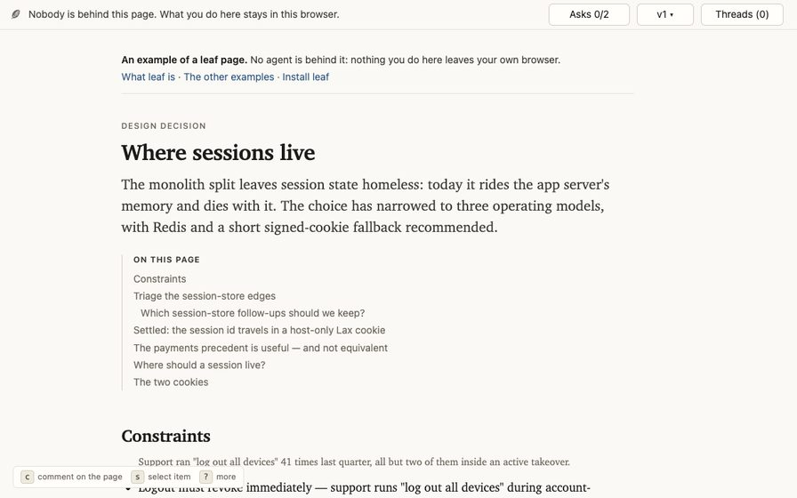
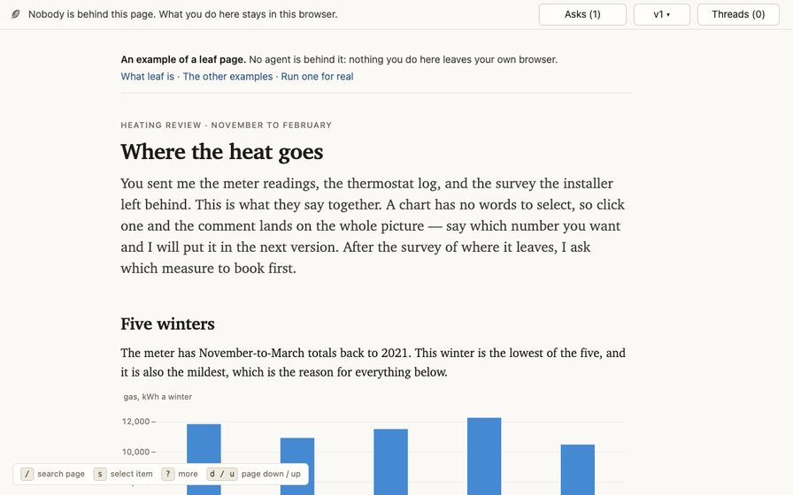
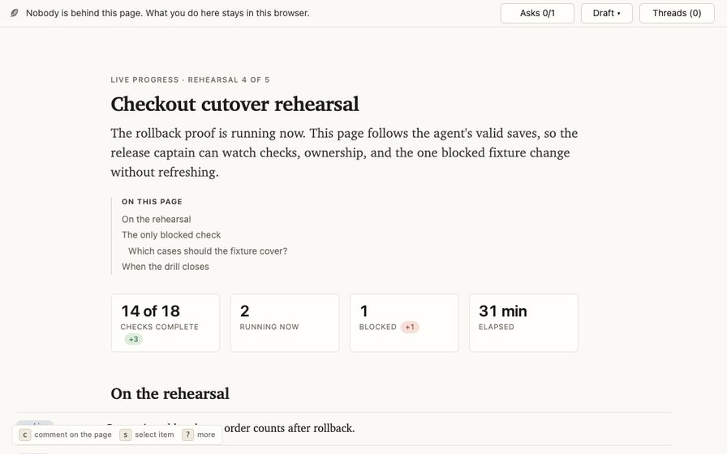
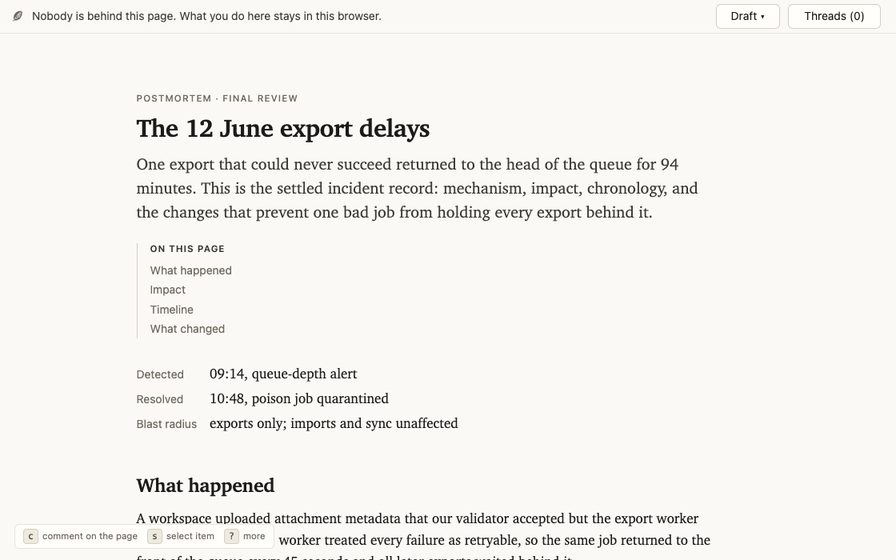
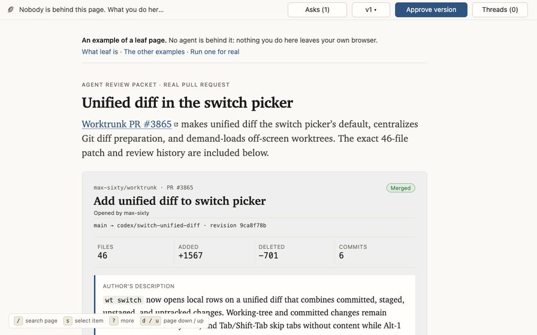
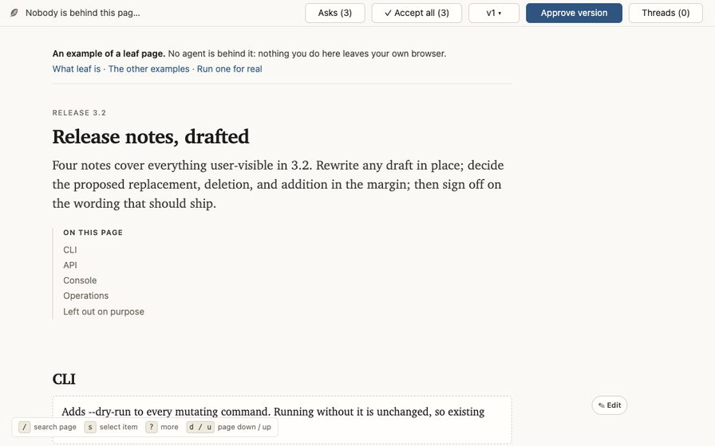
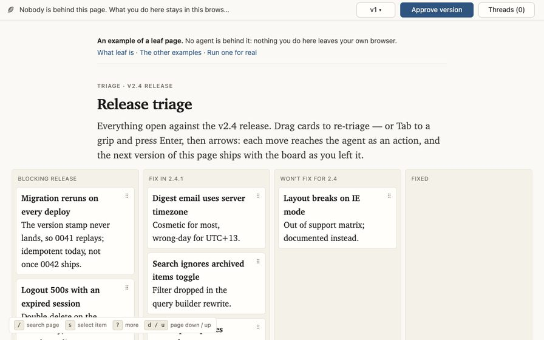
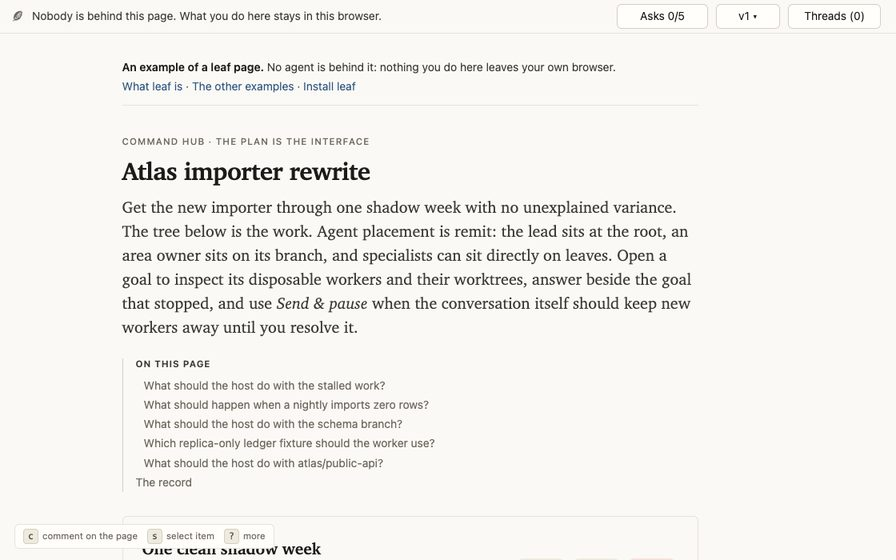
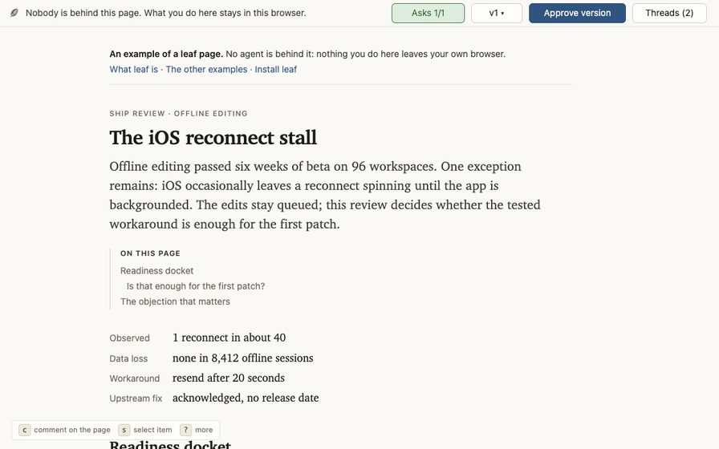
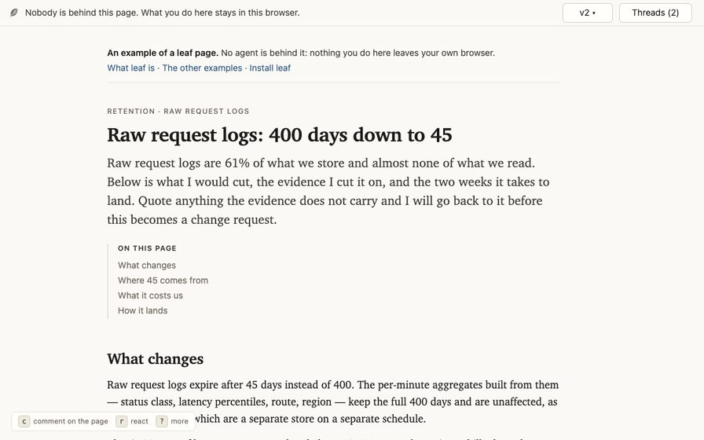

examples
See the whole page
Ten worked examples, each previewed from its own browser view. Pick a page by what it looks like, then open the complete, working version at full size.
Each example has its own information shape, rhythm, and job to do. What you change here stays in your browser; an agent joins the loop when you run one from a checkout.
the catalog
Worked pages
-

01 · architecture decision Design decision Compare two operating regimes, weigh their consequences, and choose where session state should live after a monolith split. Open full page -

02 · analytical story Heating review Turn one winter of meter readings into a five-chart argument for the first retrofit worth booking. Open full page -

03 · live operations Live progress Supervise a rollback proof through moving metrics, a worker roster, milestones, and focused handoffs. Open full page -

04 · incident account Postmortem Follow one bad export job through its failure loop, customer impact, chronology, and corrective work. Open full page -

05 · code review PR walkthrough Review a data-sourced PR through agent orientation, commentable diagrams, a call diff, the captured patch, and explicit evidence. Open full page -

06 · editorial workbench Release notes Rewrite four notes, decide proposed changes in the margin, and flip the release's visual before-and-after. Open full page -

07 · release planning Triage board Assign six defects to ship windows on one wide board, then revise the release plan by dragging the work itself. Open full page -

08 · orchestration surface Command hub See which task, agent, worktree, and operation is holding a dense importer rewrite—and act beside the stopped goal. Open full page -

09 · readiness review Ship review Enter mid-conversation on the one iOS reconnect objection that could still hold an offline-editing patch. Open full page -

10 · revised proposal Log retention Read the second version of a storage cut, mark what changed since the first, and find the comment that changed it still on its passage. Open full page
Run one for real
From a checkout, preview.py builds the page directory the runtime
expects and serves it, which is the same path an agent session takes:
scripts/preview.py triage-boardComments on that page reach somebody. Run from an agent session, they arrive and the example gets revised like any other page; run from a bare shell, they queue in the log until an agent next reads it.
The ship review is where to see what comes back: it ships a log beside it, so it opens mid-conversation with a passage marked and the exchange under it. Write a reply there and it stops at your browser; write one from a checkout and the agent answers it.
scripts/preview.py ship-reviewThe tour records the same loop end to end, if you would rather watch it than run it.